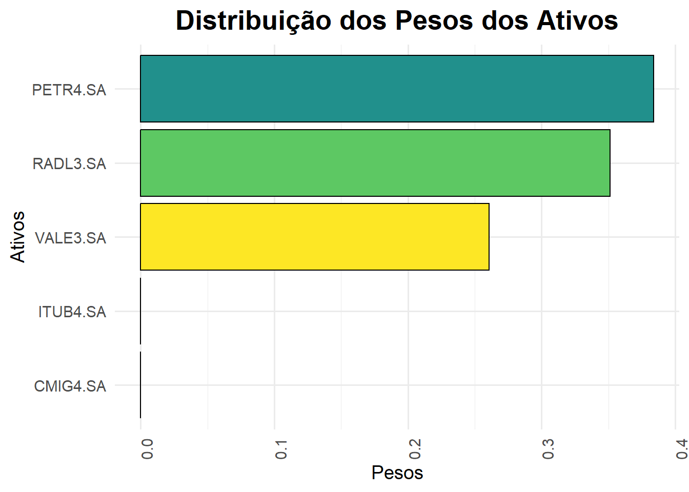

# Ativos selecionados
tickers <- c("VALE3.SA","PETR4.SA","CMIG4.SA","RADL3.SA","ITUB4.SA")
prices <-
getSymbols(tickers,
src = 'yahoo',
from = "2019-05-30",
to = "2024-05-30",
auto.assign = TRUE, #obs auto asign carrega os resultados para o ambiente
warnings = FALSE,) %>%
map(~Ad(get(.))) %>%
reduce(merge) %>%
`colnames<-`(tickers)Aula 2 - Análise e otimização de carteiras
Relembrando alguns conceitos sobre risco
Risco: Probabilidade de um resultado adverso em relação ao esperado.
Tipos de risco
- Risco conhecido: Distribuição de probabilidade do evento é conhecida (ex: falha de motor).
- Incerteza: Distribuição de probabilidade desconhecida ou imprevisível (ex: crise econômica).
Atitudes frente ao risco
- Aversão: Prefere menor risco para mesmo retorno.
- Indiferença: Não se importa com o risco.
- Propensão: Aceita maior risco por potencial de maior retorno.
O participante de uma apólice de seguros têm que predisposição frente ao risco?
E a companhia de seguros?
Mensuração do Risco
- Desvio padrão (σ): Mede a dispersão dos resultados em torno da média.
- Coeficiente de variação (CV): Mede o risco por unidade de retorno (σ / retorno médio).
Risco de Carteira
- Covariância: Mede a relação entre os retornos de dois ativos.
- Diversificação: Reduz o risco total da carteira ao combinar ativos com diferentes riscos (Markowitz, 1952) - “Não colocar todos os ovos na mesma cesta”.
Risco individual vs. sistêmico
- Individual: Específico de cada ativo.
- Sistêmico: Afeta todo o mercado.
Índice Sharpe (IS)
- Definição: Mede o retorno adicional por unidade de risco em relação à taxa livre de risco.
- Fórmula: IS = (Retorno médio do portfólio - Taxa livre de risco) / Desvio padrão do excesso de retorno.
- interpretação: IS > 1: Retorno adicional por unidade de risco; IS < 1: Retorno insuficiente por unidade de risco. Quantos mais alto o índice, melhor.
Beta (β)
- Definição: Mede a sensibilidade do retorno de um ativo em relação ao retorno do mercado.
- Fórmula: β = Cov(Ri, Rm) / Var(Rm).
- Interpretação: β > 1: Ativo mais volátil que o mercado; β < 1: Ativo menos volátil que o mercado.
- Exemplo: Se β = 1, o ativo se move na mesma direção que o mercado.
Alfa (α)
- Definição: Mede o retorno adicional de um ativo em relação ao retorno esperado com base no risco.
- Fórmula: α = Retorno do ativo - (Taxa livre de risco + β * (Retorno do mercado - Taxa livre de risco)).
- Interpretação: α > 0: Ativo superou o retorno esperado; α < 0: Ativo ficou aquém do retorno esperado.
- Exemplo: Se α = 0, o ativo teve o retorno esperado com base no risco.
- Observação: O alfa é uma medida de desempenho ajustada ao risco.
Função de utilidade quadrática
A função de utilidade quadrática é usada na otimização de portfólios para encontrar a alocação de ativos que maximiza o retorno esperado e minimiza o risco. A função de utilidade quadrática é dada por:
\(U = \mu^T w - \lambda \sigma^2\)
onde:
- \(U\) é a função de utilidade
- \(\mu^T\) é o vetor de retornos esperados
- \(w\) é o vetor de pesos dos ativos
- \(\lambda\) é o fator de aversão ao risco
generalizando para o caso de \(n\) ativos, a função de utilidade quadrática é dada por:
\(U = \mu^T w - \lambda w^T \Sigma w\)
onde:
- \(\Sigma w\) é a matriz de covariância dos retornos dos ativos
- \(w^T\) é o vetor transposto de pesos dos ativos
- \(w\) é o vetor de pesos dos ativos
- \(\lambda\) é o fator de aversão ao risco
- \(\mu\) é o vetor de retornos esperados
- \(U\) é a função de utilidade
Otimização de portfólios
A otimização de portfólios é um problema de maximização da função de utilidade quadrática sujeita a restrições, como a soma dos pesos dos ativos deve ser igual a 1 e os pesos dos ativos devem ser maiores ou iguais a zero.
Primeiro vamos carregar os pacotes necessários
Ativos selecionados
Baixando os preços do benchmark
# Baixando os preços do IBOV
ibov <- getSymbols("^BVSP",
src = 'yahoo',
from = "2019-05-30",
to = "2024-05-30",
auto.assign = TRUE,
warnings = FALSE) %>%
map(~Ad(get(.))) %>%
reduce(merge) %>%
`colnames<-`("IBOV")
head(ibov) IBOV
2019-05-30 97457
2019-05-31 97030
2019-06-03 97020
2019-06-04 97380
2019-06-05 95999
2019-06-06 97205Agora vamos converter os preços diários em mensais
prices_monthly <- to.monthly(prices, indexAt = "lastof", OHLC = FALSE)
head(prices_monthly) VALE3.SA PETR4.SA CMIG4.SA RADL3.SA ITUB4.SA
2019-05-31 30.86573 8.593932 4.256697 12.65753 28.16351
2019-06-30 32.64209 9.219558 4.282653 13.90627 29.18991
2019-07-31 31.37597 8.772201 4.077893 15.16898 28.04227
2019-08-31 28.70514 8.644517 4.256697 16.81909 27.53359
2019-09-30 30.07835 9.339466 4.132688 17.53679 28.43042
2019-10-31 29.73190 10.302230 3.936579 20.13409 29.41695ibov_monthly <- to.monthly(ibov, indexAt = "lastof", OHLC = FALSE)
head(ibov_monthly) IBOV
2019-05-31 97030
2019-06-30 100967
2019-07-31 101812
2019-08-31 101135
2019-09-30 104745
2019-10-31 107220Vamos calcular os retornos mensais
asset_returns_xts <-
PerformanceAnalytics::Return.calculate(prices_monthly,
method = "discrete") %>%
na.omit()
ibov_returns_xts <-
PerformanceAnalytics::Return.calculate(ibov_monthly,
method = "discrete") %>%
na.omit()
head(asset_returns_xts) VALE3.SA PETR4.SA CMIG4.SA RADL3.SA ITUB4.SA
2019-06-30 0.05755125 0.07279853 0.006097609 0.09865537 0.03644424
2019-07-31 -0.03878816 -0.04852263 -0.047811393 0.09080148 -0.03931640
2019-08-31 -0.08512349 -0.01455549 0.043847131 0.10878217 -0.01813957
2019-09-30 0.04783858 0.08039190 -0.029132712 0.04267203 0.03257206
2019-10-31 -0.01151822 0.10308553 -0.047453263 0.14810561 0.03469968
2019-11-30 0.05889835 -0.03443176 -0.043955720 0.02718191 -0.03907229head(ibov_returns_xts) IBOV
2019-06-30 0.040575080
2019-07-31 0.008369071
2019-08-31 -0.006649511
2019-09-30 0.035694863
2019-10-31 0.023628813
2019-11-30 0.009447864Otimização da carteira
#| message: false
# Criando o objeto de otimização
portf <- portfolio.spec(assets = colnames(asset_returns_xts))
# Adicionando restrições, como por exemplo, a soma dos pesos dos ativos deve ser igual a 1
portf <- add.constraint(portf,
type = "weight_sum",
min_sum = 0.99, max_sum = 1.01
)
# Adicionando restrição de peso mínimo e máximo para cada ativo
# Neste caso, o peso mínimo é 0 e o peso máximo é 1
portf <- add.constraint(portf, type = "long_only")
# Adiciona a função objetivo, que é minimizar o desvio padrão da carteira
portf <- add.objective(portf, type = "risk", name = "StdDev")
portf <- add.objective(portf,
type = "return", name = "mean"
)
# Resolve o problema de otimização
opt_portf <- optimize.portfolio(asset_returns_xts,
portf,
optimize_method = "ROI",
maxSR = TRUE,
trace = TRUE)Resultados da otimização
opt_portf***********************************
PortfolioAnalytics Optimization
***********************************
Call:
optimize.portfolio(R = asset_returns_xts, portfolio = portf,
optimize_method = "ROI", trace = TRUE, maxSR = TRUE)
Optimal Weights:
VALE3.SA PETR4.SA CMIG4.SA RADL3.SA ITUB4.SA
0.2608 0.3838 0.0000 0.3511 0.0000
Objective Measure:
StdDev
0.06709
mean
0.02114 Extraindo os pesos dos ativos
# extraindo os pesos para um data frame
weights <- extractWeights(opt_portf)
# Adicionando os nomes dos ativos sem colocá-los no índice
weights <- data.frame(tickers = colnames(asset_returns_xts), weights, row.names = NULL)
weights tickers weights
1 VALE3.SA 2.608392e-01
2 PETR4.SA 3.837557e-01
3 CMIG4.SA -1.387779e-17
4 RADL3.SA 3.511171e-01
5 ITUB4.SA 2.411089e-18plotando com o portfolioAnalytics
chart.Weights(opt_portf)Plotando com ggplo2
ggplot(weights, aes(x = reorder(tickers, weights), y = weights, fill = tickers)) +
geom_col(color = "black", show.legend = FALSE) +
theme_minimal(base_size = 14) +
theme(axis.text.x = element_text(angle = 90, hjust = 1),
plot.title = element_text(hjust = 0.5, size = 20, face = "bold"),
plot.subtitle = element_text(hjust = 0.5, size = 16),
legend.position = "none") +
scale_fill_viridis_d() +
labs(title = "Distribuição dos Pesos dos Ativos",
x = "Ativos",
y = "Pesos") +
coord_flip()
Realizando otimização da função de utilidade com o PortfolioAnalytics
#criar o objeto de otimização
portf <- portfolio.spec(assets = colnames(asset_returns_xts))
# Adicionando restrições, como por exemplo, a soma dos pesos dos ativos deve ser igual a 1
portf <- add.constraint(portf, type = "full_investment")
# Adicionando restrição de peso mínimo e máximo para cada ativo (0-1)
portf <- add.constraint(portf, type = "long_only")
# Adiciona a função objetivo, que é maximizar o retorno esperado
portf <- add.objective(portf, type = "return", name = "mean")
# Adiciona a função objetivo, que é minimizar a variância da carteira
portf <- add.objective(portf, type = "risk", name = "var")
portf <- add.objective(portf, type = "quadratic_utility", risk_aversion = 10)
# Resolve o problema de otimização
opt_portf <- optimize.portfolio(asset_returns_xts, portf, optimize_method = "ROI")
# Extraindo os pesos dos ativos
extractWeights(opt_portf) VALE3.SA PETR4.SA CMIG4.SA RADL3.SA ITUB4.SA
3.291017e-01 1.614216e-01 3.206608e-02 4.774106e-01 -1.387779e-17 Pesos
extractWeights(opt_portf) VALE3.SA PETR4.SA CMIG4.SA RADL3.SA ITUB4.SA
3.291017e-01 1.614216e-01 3.206608e-02 4.774106e-01 -1.387779e-17 Entendendo a especificação do portfólio
O objeto de portfólio é uma lista que contém as seguintes informações:
- assets: vetor de nomes dos ativos
- constraints: lista de restrições
- weight_sum: restrição de que a soma dos pesos dos ativos deve ser igual a um valor específico
- full_investment: restrição de que a soma dos pesos dos ativos deve ser igual a 1
- dollar_neutral: restrição de que a soma dos pesos dos ativos deve ser igual a zero
- box: restrição de que os pesos dos ativos devem estar dentro de um intervalo específico
- long_only: restrição de que os pesos dos ativos devem ser maiores ou iguais a zero e menores ou iguais a um (caso especial da restrição box)
- group: restrição de que os pesos dos ativos de um grupo específico devem ser iguais
- turnover: restrição de que o turnover da carteira deve ser menor ou igual a um valor específico a partir de uma carteira inicial
- diversification: Especifica um valor de diversificação para a carteira
- position_limit: Permite ao usuário definir o número máximo de posições (ativos com pesos não nulos) e o número máximo de posições compradas e vendidas.
- return: Especifica o retorno médio esperado da carteira
- factor_exposure: Especifica a exposição da carteira a fatores de risco
- leverage_exposure: Especifica a alavancagem maxima da carteira onde a alavancagem é definida como a soma dos pesos absolutos dos ativos
- objectives:
- type: ‘return’,‘risk’, ‘risk_budget’, ‘quadratic_utility’, or ’weight_concentration
Passo a passo da otimização de portfólios
- Carregar os preços dos ativos e do benchmark
- Converter os preços diários em preços mensais
- Calcular os retornos mensais dos ativos e do benchmark
- Criar o objeto de portfólio
- Adicionar restrições ao objeto de portfólio
- Adicionar a função objetivo ao objeto de portfólio
- Resolver o problema de otimização
- Exibir os resultados da otimização
- Exibir os pesos dos ativos na carteira otimizada
- Plotar a distribuição dos pesos dos ativos na carteira otimizada
Criando um objeto para as especificações do portfólio
# Criando o objeto de portfólio, aqui estamos apenas especificando os ativos que serão utilizados na otimização
port_spec <- portfolio.spec(assets = colnames(asset_returns_xts))
class(port_spec)[1] "portfolio.spec" "portfolio" Adicionando restrições ao objeto de portfólio
As restrições são condições que devem ser satisfeitas durante a otimização da carteira. Algumas restrições comuns são relacionadas ao peso dos ativos e ao retorno esperado da carteira.
# Adicionando restrições, como por exemplo, a soma dos pesos dos ativos deve ser igual a 1
port_spec <- add.constraint(port_spec, type = "weight_sum", min_sum = 1, max_sum = 1)
# adicionnando uma restrição de caixas para os pesos dos ativos
port_spec <- add.constraint(port_spec, type = "box", min = c(0.2, 0.1, 0.1, 0.1, 0.1), max = 0.4)
port_spec**************************************************
PortfolioAnalytics Portfolio Specification
**************************************************
Call:
portfolio.spec(assets = colnames(asset_returns_xts))
Number of assets: 5
Asset Names
[1] "VALE3.SA" "PETR4.SA" "CMIG4.SA" "RADL3.SA" "ITUB4.SA"
Constraints
Enabled constraint types
- weight_sum
- box Adicionando a função objetivo ao objeto de portfólio
A função objetivo é a função que será otimizada durante o processo de otimização da carteira. Um objetivo comum é maximizar o retorno esperado da carteira e minimizar a volatilidade e o risco.
Lembre-se que o desvio padrão é a raiz quadrada da variância. E que a variância é a média dos quadrados dos desvios em relação à média. A variancia é geralmente usada para denotar o risco, quanto maior a variancia, maior o risco. Já geralmente denota a volatilidade, quanto maior o desvio padrão, maior a volatilidade. Ambas são medidas que servem como indicadores de risco.
No portfolioAnalytics, a função objetivo é adicionada ao objeto de portfólio usando a função add.objective(). Os objetivos mais usado são:
- return: Maximizar o retorno esperado da carteira
- risk: Minimizar o risco da carteira
- risk_budget: Minimizar a contribuição marginal do risco de cada ativo para o risco total da carteira
- quadratic_utility: Maximizar a função de utilidade quadrática da carteira
- weight_concentration: Minimizar a concentração dos pesos dos ativos na carteira
# Adiciona a função objetivo, que é maximizar o retorno médio esperado da carteira
port_spec <- add.objective(port_spec, type = "return", name = "mean")
# Adiciona a função objetivo, que é minimizar o desvio padrão da carteira
port_spec <- add.objective(port_spec, type = "risk", name = "StdDev")
# Adiciona um objetivo para minimizar a contribuição marginal do risco de cada ativo para o risco total da carteira
port_spec <- add.objective(port_spec, type = "risk_budget", name = "var", min_prisk = 0.05, max_prisk = 0.1)
print(port_spec)**************************************************
PortfolioAnalytics Portfolio Specification
**************************************************
Call:
portfolio.spec(assets = colnames(asset_returns_xts))
Number of assets: 5
Asset Names
[1] "VALE3.SA" "PETR4.SA" "CMIG4.SA" "RADL3.SA" "ITUB4.SA"
Constraints
Enabled constraint types
- weight_sum
- box
Objectives:
Enabled objective names
- mean
- StdDev
- var Resolvendo o problema de otimização
Existem duas funções principais para resolver o problema de otimização da carteira: optimize.portfolio() e optimize.portfolio.rebalancing(). A função optimize.portfolio() é usada para otimizar a carteira sem rebalanceamento, enquanto a função optimize.portfolio.rebalancing() é usada para otimizar a carteira com rebalanceamento.
Lembre-se que o rebalanceamento é o processo de ajustar os pesos dos ativos na carteira para manter a alocação desejada ao longo do tempo.
O pacote suporta diversos métodos de otimização, como:
- DEoptim: Differential Evolution
- random: Random Portfolios
- GenSA: Generalized Simulated Annealing
- pso: Particle Swarm Optimization
- ROI: R Optimization Infrastructure
O método a ser usado irá depender do problema.
Vamos fazer fazer uma otimização usando o método de portifolios aleatórios. Nosso objetivo é maximizar o retorno esperado da carteira e minimizar o risco onde o risco minimo é 5% e o risco maximo é 10% sujeito a restrições de peso e de grupo.
# .storage <<- new.env()
rp <- random_portfolios(port_spec, permutations = 1000, rp_method = 'simplex')Warning: executing %dopar% sequentially: no parallel backend registered# rp <- random_portfolios(port_spec, permutations = 1000, rp_method = 'sample')
# rp <- random_portfolios(port_spec, permutations = 1000, rp_method = 'grid')
head(rp) VALE3.SA PETR4.SA CMIG4.SA RADL3.SA ITUB4.SA
[1,] 0.3224445 0.2402095 0.1655588 0.1200365 0.1517508
[2,] 0.3110452 0.2437957 0.1778512 0.1055166 0.1617914
[3,] 0.2315571 0.1019185 0.1904136 0.3282470 0.1478639
[4,] 0.3011285 0.1867509 0.2018843 0.1481562 0.1620801
[5,] 0.2624004 0.1637672 0.2152460 0.2017702 0.1568162
[6,] 0.2027899 0.1553114 0.3381339 0.2026653 0.1010994Simplex: Distribui pesos aleatoriamente em um espaço triangular, garantindo que a soma seja sempre 1. Sample: Seleciona pesos aleatórios de uma distribuição de probabilidade específica. Grid: Gera pesos em pontos pré-definidos de uma grade regular.
opt <- optimize.portfolio(R = asset_returns_xts, port_spec, rp = rp, optimize_method = "random", trace = TRUE)Leverage constraint min_sum and max_sum are restrictive,
consider relaxing. e.g. 'full_investment' constraint should be min_sum=0.99 and max_sum=1.01print(opt)***********************************
PortfolioAnalytics Optimization
***********************************
Call:
optimize.portfolio(R = asset_returns_xts, portfolio = port_spec,
optimize_method = "random", trace = TRUE, rp = rp)
Optimal Weights:
VALE3.SA PETR4.SA CMIG4.SA RADL3.SA ITUB4.SA
0.3039 0.1009 0.1000 0.3927 0.1024
Objective Measures:
mean
0.01596
StdDev
0.0602
contribution :
VALE3.SA PETR4.SA CMIG4.SA RADL3.SA ITUB4.SA
0.017699 0.007228 0.006641 0.021894 0.006735
pct_contrib_StdDev :
VALE3.SA PETR4.SA CMIG4.SA RADL3.SA ITUB4.SA
0.2940 0.1201 0.1103 0.3637 0.1119 Otimizando a carteira com rebalanceamento
A função optimize.portfolio.rebalancing() é usada para otimizar a carteira com rebalanceamento. O rebalanceamento é o processo de ajustar os pesos dos ativos na carteira para manter a alocação desejada ao longo do tempo. O rebalanceamento é importante para garantir que a carteira permaneça alinhada com os objetivos de investimento (restrições e objetivos) ao longo do tempo.
optimize.portfolio.rebalancing() suporta otimização de carteiras com rebalanceamento em diferentes janelas de tempo. O backtest é o processo de testar uma estratégia de investimento em dados históricos para avaliar seu desempenho.
OBS: Dependendo do método de otimização, o processo pode ser demorado.
Exemplo de otimização com rebalanceamento:
# Criar o objeto de portfólio
port_specr <- portfolio.spec(assets = colnames(asset_returns_xts))
# Adicionar restrições - full investment com soma de pesos igual a 1
port_specr <- add.constraint(port_specr, type = "long_only")
# restrição para a soma dos pesos
port_specr <- add.constraint(port_specr, type = "weight_sum", min_sum = 0.99, max_sum = 1.01)
# Adicionar a função objetivo - maximizar o retorno esperado
port_specr <- add.objective(port_specr, type = "return", name = "mean")
# Adicionar a função objetivo - minimizar o risco
port_specr <- add.objective(port_specr, type = "risk", name = "StdDev")
# Adicionar a função objetivo - minimizar a contribuição marginal do risco de cada ativo para o risco total da carteira
port_specr <- add.objective(port_specr, type = "risk_budget", name = "StdDev", min_prisk = 0.05, max_prisk = 0.1)
rp <- random_portfolios(port_specr, permutations = 50, rp_method = 'simplex')Otimização
# Otimização com rebalanceamento mensal
opt_rebal <- optimize.portfolio.rebalancing(R = asset_returns_xts,
portfolio = port_specr,
optimize_method = "random",
rp = rp,
trace = TRUE,
search_size = 1000,
rebalance_on = "months",
training_period = 12,
rolling_window = 12)
print(opt_rebal)**************************************************
PortfolioAnalytics Optimization with Rebalancing
**************************************************
Call:
optimize.portfolio.rebalancing(R = asset_returns_xts, portfolio = port_specr,
optimize_method = "random", search_size = 1000, trace = TRUE,
rp = rp, rebalance_on = "months", training_period = 12, rolling_window = 12)
Number of rebalancing dates: 49
First rebalance date:
[1] "2020-05-31"
Last rebalance date:
[1] "2024-05-31"
Annualized Portfolio Rebalancing Return:
[1] 0.2548541
Annualized Portfolio Standard Deviation:
[1] 0.203243Analise dos resultados
extractObjectiveMeasures(opt_rebal) |> head(1) mean StdDev StdDev.contribution.VALE3.SA
2020-05-31 0.006597553 0.08007868 0.01307995
StdDev.contribution.PETR4.SA StdDev.contribution.CMIG4.SA
2020-05-31 0.01011723 0.03263592
StdDev.contribution.RADL3.SA StdDev.contribution.ITUB4.SA
2020-05-31 0.01457031 0.009675268
StdDev.pct_contrib_StdDev.VALE3.SA
2020-05-31 0.1633387
StdDev.pct_contrib_StdDev.PETR4.SA
2020-05-31 0.1263411
StdDev.pct_contrib_StdDev.CMIG4.SA
2020-05-31 0.4075482
StdDev.pct_contrib_StdDev.RADL3.SA
2020-05-31 0.18195
StdDev.pct_contrib_StdDev.ITUB4.SA
2020-05-31 0.120822extractWeights(opt_rebal) |> head() VALE3.SA PETR4.SA CMIG4.SA RADL3.SA ITUB4.SA
2020-05-31 0.2768987 0.0631134 0.2757865 0.2572021 0.1269994
2020-06-30 0.2768987 0.0631134 0.2757865 0.2572021 0.1269994
2020-07-31 0.2768987 0.0631134 0.2757865 0.2572021 0.1269994
2020-08-31 0.2768987 0.0631134 0.2757865 0.2572021 0.1269994
2020-09-30 0.2768987 0.0631134 0.2757865 0.2572021 0.1269994
2020-10-31 0.2768987 0.0631134 0.2757865 0.2572021 0.1269994chart.Weights(opt) chart.Weights(opt_rebal)Plotando os pesos ao longo do tempo com ggplot2
# Extraindo os pesos dos ativos ao longo do tempo
weights_xts <- extractWeights(opt_rebal)
# Convertendo os pesos para um data frame
weights_df <- weights_xts %>%
tk_tbl(preserve_index = TRUE, rename_index = "Date")
# Colocando o data frame em formato longo
weights_long_df <- weights_df %>%
pivot_longer(cols = -Date, names_to = "Asset", values_to = "Weight")
plotly::ggplotly(ggplot(weights_long_df) +
aes(x = Date, y = Weight, colour = Asset) +
geom_smooth(se = FALSE ) +
scale_fill_hue(direction = 1) +
labs(
x = "Data",
y = "Peso",
title = "Peso dos ativos rebalanceados ao longo do tempo",
colour = "Ativos"
) +
theme_minimal() +
theme(
plot.title = element_text(size = 16L,
face = "bold",
hjust = 0.5)
)
)`geom_smooth()` using method = 'loess' and formula = 'y ~ x'Plotando o retorno do portfólio ao longo do tempo
# Calculando o retorno do portfólio otimizado e adicionando o retorno do IBOV
opt_returns_long_df <- Return.portfolio(R = asset_returns_xts, weights = extractWeights(opt_rebal)) %>%
tk_tbl(preserve_index = TRUE, rename_index = "Date") %>%
inner_join(ibov_returns_xts %>% tk_tbl(preserve_index = TRUE, rename_index = "Date"), by = "Date", suffix = c("_Portfolio", "_IBOV")) %>%
pivot_longer(cols = -Date, names_to = "Portfolio", values_to = "Return")
plotly::ggplotly(ggplot(opt_returns_long_df) +
aes(x = Date, y = Return, colour = Portfolio) +
geom_line() +
scale_fill_hue(direction = 1) +
labs(
x = "Data",
y = "Retorno",
title = "Retorno do portifólio vs IBOV ao longo do tempo",
colour = "Portfólio"
) +
theme_minimal() +
theme(
plot.title = element_text(size = 16L,
face = "bold",
hjust = 0.5)
)
)Bonus: Plotando a fronteira eficiente
A fronteira eficiente é uma curva que mostra a combinação ótima de ativos em uma carteira que maximiza o retorno esperado para um determinado nível de risco. Note que o indice de Sharpe é a inclinação da linha tangente a fronteira eficiente, o intercepto com o eixo y é o retorno livre de risco e o ponto de tangência é o ponto com o maior indice de Sharpe.
# Calculando a fronteira eficiente
frontier <- create.EfficientFrontier(R = asset_returns_xts, portfolio = port_spec, type = "mean-StdDev")
# Plotando a fronteira eficiente
chart.EfficientFrontier(frontier, match.col = "StdDev",n.portfolios = 30, main = "Fronteira eficiente")Dashboards interativos com QUARTO
Exercício
- Crie uma carteira com 5 ativos de sua escolha
- Baixe os preços dos ativos
- Calcule os retornos mensais
- Crie um vetor de pesos para a carteira
- Calcule o retorno da carteira
- Faça a otimização da carteira com o objetivo de maximizar o retorno esperado e minimizar o risco
- Opcionalmente faça a otimização com rebalanceamento
- Visualize o retorno da carteira e dos ativos
- Compare o retorno da carteira com o índice do mercado
- Salve o seu dashboard e compartilhe com o professor